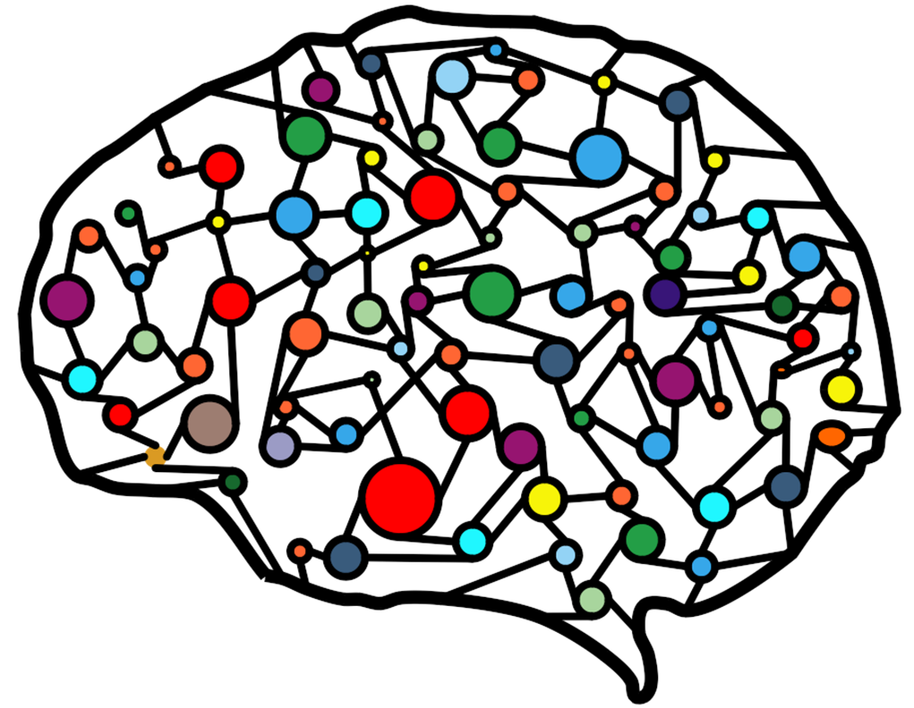

local Nums={}
local Syms={}
local Num = require"num"
local Sym = require"sym"
local obj = require"obj"
local sfmt = require("strings").sfmt
local prune,ranges-
category Range = Nums or Syms
Duo101. data miners using/used-by optimizers
©2021 Tim Menzies, timm@ieee.org
Inference = cluster, discretize, contrast
about: home, use, install, license, discuss
lib: files, list, maths, obj, rand, stats, strings
cols: num, skip, some, sym
data: numtools, range, sample
cli: about, cli
tool: nb

This code lets us treat numeric
Numsand symbolicSymsranges with the same protocol. Also, forNums, this code implements supervised discrimination.Class Nums : category= data Does 1 : explores lists of (x:num, y:sym), sorted on num2 : find ranges that split the xvalues into not-small chunks3 : prune ranges that do not change the ydistribution4 : reports if a value can be in a range Has x:Num : info about the xvaluesy:Sym : info about the yvaluesat:num : column index of this range name:str : column name of this range Uses : Num, Sym
Class Syms : category= data Does 1 : reports if a value can be in a range Has x:string : the symbolic xvalue that defines this rangeat:num : column index of this range name:str : column name of this range -
Creation
function Nums(xs,ys,at,name) return obj(self,"Nums", {at=at or 0, name=name or "", xs=xs or Num:new(), ys=ys or Sym:new()}) end function Syms(x,at,name) return obj(self,"Syms", {at=at or 0, name=name or "",x=x}) end -
Printing
function Nums:show(w,d, f) w,d=w or 5,d or 2 f = sfmt("%%%s,%sf",w,d) -- format for width`w` and `d` decimals return sfmt("%s=["..f..".."..f.."]",self.name,self.xs.lo,self.xs.hi) end function Syms:show(w,d, s) s=tostring(self.x) return sfmt("%s=[%s]", self.name, s:sub(1,math.min(w,#s))) end -
Query
holds(row :table, isFirst :boolean, isLast :boolean) :boolean)
Returns true if this row might be in this range. Note that forNums, being the first or last range is space casefunction Nums:holds(row,isFirst,isLast, x) x = row[self.at] if x=="?" then return true elseif isFirst and x <= self.xs.hi then return true elseif isLast and x >= self.xs.lo then return true else return x>=self.xs.lo and x<=self.xs.hi end end function Syms:holds(row, isFirst, isLast, x) x = row[self.at] return x=="?" and true or x==self.x end -
Discretization
ranges(xys :{{num,str}}, tiny :num, enough :num): {range}
Make a new range when
(1) there is enough left for at least one more range; and
(2) the lo,hi delta in current range is not tiny; and
(3) there are enough x values in this range; and
(4) there is natural split herefunction ranges(xys, tiny, enough, now,out,x,y) while width <4 and width<#xy/2 do width=1.2*width end --grow small widths now = Nums:new() out = {now} for j,xy in sort(xys,"x") do x,y = xy[1],xy[2] if j < #xys - enough then -- (1) if x ~= xys[j+1][1] then -- (2) if now.n > enough then -- (3) if now.hi - now.lo > tiny then -- (4) now=Nums:new() out[ 1+#out ] = now end end end end now.xs.add(x) now.ys.add(y) end return prune(out) end -
prune(b4 :{{xs:Num,ys:Sym}}) :{{xs:Num,ys:Sym}}
Return a smaller version ofb4(by subsuming ranges that do not change the class distributions seen inys)function prune(b4, j,tmp,n,a,b,cy) j, n, tmp = 1, #b4, {} while j<=n do a= b4[j] if j < n-1 then b= b4[j+1] cy= merge(a.ys, b.ys) if cy:var() <= (a.ys:var()*a.ys.n + b.ys:val()*b.ys.n) / cy.n then a= Nums(a.xs:merge(b.xs), cy) j = j + 1 end end tmp[1+#tmp] = a j = j + 1 end return #tmp==#b4 and tmp or merge(tmp) end -
return {ranges=ranges, Nums=Nums, Syms=Syms}